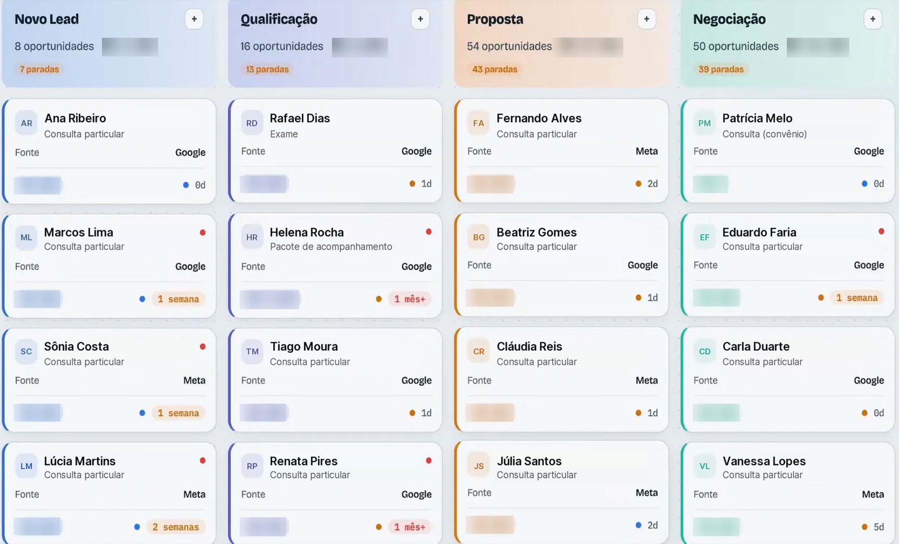
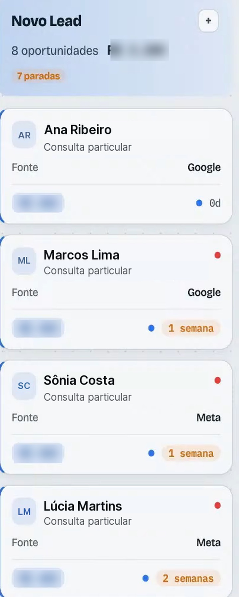
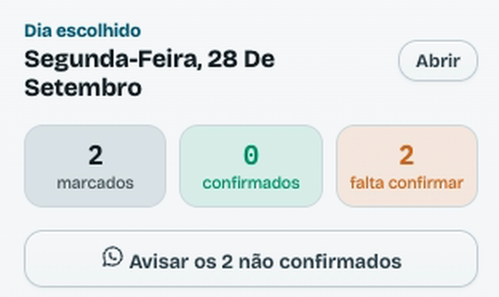
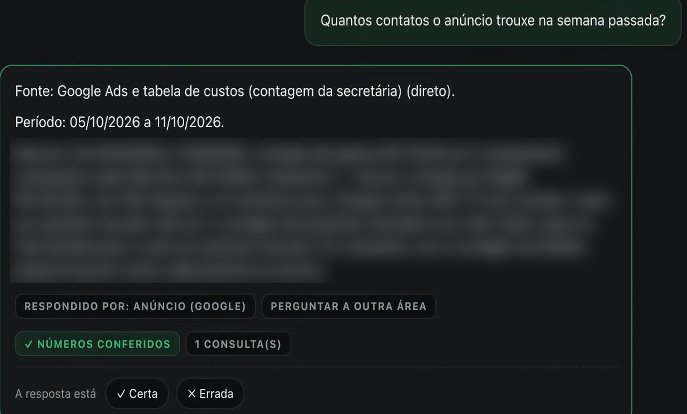

Praxys Assistant · para médicos com consultório
O sistema de gestão do consultório que fecha a conta.
Atendimento automático no WhatsApp oficial, cada contato num quadro, a origem de cada paciente e funcionários de IA que respondem com os números do seu consultório. Para decidir com número, não com achismo.
Agendar demonstração no WhatsAppJorge Ferreira · fundador da Praxys · médico, usa o sistema no próprio consultório

O problema que ninguém te contou
Você trabalhou o mês inteiro. Para onde foi o dinheiro?
Agenda cheia não é sinônimo de lucro. O paciente escreve às dez da noite e ninguém responde. A recepção virou central de mensagens. E você paga Google e Instagram sem saber qual dos dois enche a agenda.
pacientes pararam de voltar no último ano. Eu não sabia.
Achado do consultório do Jorge. Não é média de mercado nem garantia do que você vai encontrar no seu.
“O problema não era falta de paciente. Era falta de alguém olhando a operação enquanto eu atendia.”
O sistema
Do primeiro “oi” no WhatsApp ao número do fim do mês.
Cinco partes que conversam entre si. Telas reais, com nomes fictícios e valores borrados.
01 · ATENDIMENTO 24H
O paciente escreve às 22h. Tem resposta.
Responde, tira dúvida administrativa e marca nas regras que você definir, no WhatsApp oficial da Meta. Entende áudio e avisa que é um assistente virtual.
- No número que você já usa (modo Coexistência)
- WhatsApp, Instagram e Facebook numa caixa de entrada só
- A secretária liga, desliga e assume qualquer conversa
Sábado · 22h04
“Boa noite, tem horário na terça?”
22h04 · assistente virtual do consultório
Boa noite! Tenho terça às 10h ou às 15h. Qual fica melhor?
Exemplo de conversa. As respostas seguem as regras e os horários que você aprovar.
02 · KANBAN DE LEADS
Todo contato vira um card. Num quadro só.
Novo contato, qualificação, proposta, negociação. A equipe vê em que etapa cada um está e há quanto tempo está parado.
Tela real do sistema · nomes fictícios
03 · ORIGEM DO PACIENTE
De onde veio cada paciente.
Google, Meta (Instagram e Facebook), site ou indicação, no próprio card. Com a agenda e as contas de anúncio ligadas, você vê qual caminho traz paciente.
Depende da integração com a sua agenda e com as contas de anúncio
Tela real do sistema · nomes fictícios
04 · HISTÓRICO E CONFIRMAÇÃO
A história de cada paciente. E a agenda de amanhã confirmada.
Quem marcou, quem voltou, quem sumiu. Confirmação e lembrete automáticos em modelos oficiais da Meta; a secretária vê quem não respondeu e escolhe avisar.
- Sem prontuário: o prontuário continua no sistema que você já usa
- Quem recusou mensagem não é recontatado

Tela real do sistema · dados borrados
05 · O GERENTE
Você pergunta. Ele responde com os números do consultório.
Um lugar só para perguntar sobre agenda, financeiro, anúncio e pacientes. Cada resposta mostra a fonte, o período e se os números foram conferidos.
Depende da integração com a sua agenda, anúncios e dados de custo
Tela real do sistema · dados borrados
As 4 perguntas de todo dono de consultório
A IA faz a conta. Você toma a decisão.
Na aula aberta gravada, o Gerente respondeu ao vivo, com os dados do consultório do Jorge. Com os seus dados, ele responde as suas.
Quanto custa o meu consultório por mês?
Quanto sobra líquido para mim de cada consulta?
Quantas consultas faltam para a minha meta?
Qual preço cobre o custo, o meu salário e a margem que eu quero?
O seu salário entra na conta como custo, não como lucro. Depende dos dados de custo e da integração com a agenda.
Por trás do Gerente
25 funcionários de IA. Você conversa com um.
Cada um responde uma pergunta do consultório. Você pergunta do seu jeito, e a Porta de entrada leva a pergunta ao funcionário certo. Tudo volta para você num lugar só.
O dinheiro entra
- 1 · Leitor de fontesO que o sistema da clínica e o banco registraram?
- 2 · Bate o mêsO que eu vendi entrou na conta?
- 3 · Arruma o sistemaO cadastro e os lançamentos estão certos?
O caixa
- 9 · Fechei o mês?Posso dar o mês por fechado?
- 10 · Vai faltar dinheiro?O caixa fecha no azul nos próximos 3 meses?
- 11 · Reserva do consultórioQuanto devo guardar por mês?
O dinheiro sai e o preço
- 4 · Deu lucro?O consultório se pagou no mês?
- 5 · Quanto custa atenderQuanto me custa cada consulta e cada exame?
- 6 · Confere o contadorA guia de imposto está certa?
- 7 · O convênio paga?O convênio pagou o que eu atendi?
- 8 · Quantos fizeram exame?Dos exames que indiquei, quantos foram feitos? (em validação da integração com o receituário digital)
O paciente
- 12 · Quem sumiuQuem deveria ter voltado e não voltou?
- 13 · Tem vaga?Onde a agenda está vazia, e quanto isso custa?
- 14 · A minha carteiraQuantos pacientes ainda são meus?
- 15 · O que os pacientes estão dizendoComo estão minhas avaliações?
- 16 · Quem indicaDe onde vem o paciente novo?
Trazer paciente
- 17 · Custo por pacienteO anúncio está trazendo paciente?
- 18 · MarketingPor onde falar, e com que texto?
- 19 · Vídeo com avatarEm pausa.
A casa
- 20 · Apoio à secretáriaO que dá para tirar das costas da secretária?
- 21 · Os aparelhosCada aparelho está se pagando?
- 22 · Estou protegido?O que me expõe e vence sem avisar?
A gestão
- 23 · Porta de entradaPara quem vai a minha pergunta?
- 24 · Como está o consultórioComo está tudo, numa mensagem só?
- 25 · Minha hora vale quanto?Consulta, exame ou aula: o que rende mais por hora?
Depende das integrações e dos dados do seu consultório. O escopo exato que entra no seu consultório é definido na demonstração e aprovado por escrito antes da contratação.
Por dentro do sistema · vídeos
O seu consultório, por dentro.
O que você e a sua secretária veem na tela, em menos de um minuto.
- Todo contato vira um card, por etapa
- De onde cada paciente veio
- Atendimento 24 horas no WhatsApp oficial
- Quem não confirmou, e a decisão de avisar
- O Gerente respondendo com a fonte
Segurança, LGPD e CFM
O que ele faz. E o que ele não faz.
Funciona porque está instalado num ambiente seguro, ligado 24 horas e ajustado ao seu consultório. Não é um arquivo solto no seu computador.
Cloud API, modo Coexistência. O número continua o seu, no seu celular. Nenhuma conexão paralela fora da Meta.
Sem diagnóstico, sem orientação de tratamento, sem prontuário. Sintoma ou urgência vai na hora para a equipe; urgência é orientada a ligar 192.
A IA faz a conta e aponta. Quem decide é o médico, como pede a Resolução CFM 2.454/2026.
A Praxys trata os dados como operadora, com contrato de tratamento de dados (DPA). Dado de paciente fica no sistema do consultório, com servidores no Brasil, e só passa pelos serviços necessários ao atendimento (WhatsApp e IA), sob contrato de tratamento de dados.
Mensagem fora da conversa só em modelo oficial e com consentimento. Quem recusou não é recontatado.
Cada funcionário passa por uma entrevista de instalação que testa cada fonte e diz o que falta. Não é “baixar e rodar”.
Como funciona a implantação
Você não instala nada. A Praxys implanta com você.
- Demonstração
Uma conversa pelo WhatsApp ou vídeo. Você vê o sistema com dados de exemplo.
- Escopo por escrito
O que entra no seu consultório, as integrações e o valor, antes de qualquer pagamento.
- Implantação
A equipe liga o WhatsApp oficial, a agenda e as fontes. Prazo estimado de até 15 dias úteis.
- Secretária treinada
Ligar, desligar, assumir conversa. Treinamento curto.
- Liberação
O implantador confere tudo funcionando no seu consultório. Só então a mensalidade começa a contar.
Perguntas frequentes · antes de contratar qualquer IA
Faça estas 7 perguntas. A nós também.
01O WhatsApp é oficial da Meta?
Sim. Cloud API oficial, no modo Coexistência.
02O número continua sendo o meu?
Sim. O número é do consultório e continua no seu celular.
03Se eu desistir, recebo o dinheiro de volta?
Sim. Em até 7 dias corridos do aceite do contrato, devolução integral de tudo o que foi pago. Depois desse prazo, a implantação remunera o trabalho técnico já feito, e a assinatura pode ser cancelada a qualquer momento, sem multa, valendo no fim do ciclo.
04Quanto custa o ano inteiro, com tudo?
Depende da implantação do seu consultório. Você recebe o valor por escrito na demonstração, antes de qualquer pagamento, incluindo a tarifa da Meta, que é do consultório.
05Quando a IA errar, quem ajusta e em quanto tempo?
A equipe da Praxys, pelo suporte no WhatsApp. Enquanto isso, a secretária desliga o automático e assume a conversa.
06Como eu cancelo?
Pelo WhatsApp ou e-mail, sem multa e sem fidelidade. O cancelamento vale no fim do ciclo mensal.
07Onde ficam os dados dos meus pacientes?
O prontuário continua no sistema que você já usa. A Praxys trata só o necessário, como operadora, com contrato de tratamento de dados (DPA).
Quem faz
Eu não sou de tecnologia. Eu sou dono de consultório.
Criei o Praxys Assistant porque a dor era minha, não porque vi uma oportunidade de mercado. Foram cerca de 700 horas de validação, teste e reteste, fora do horário do consultório. Tudo roda primeiro no meu consultório, antes de chegar ao seu.
Jorge Ferreira · fundador da Praxys · médico, usa o sistema no próprio consultório
Professor universitário desde 2015 · Nova Iguaçu, RJ
Veja o sistema funcionando antes de decidir.
Uma conversa com o Jorge ou com a equipe da Praxys, com dados de exemplo. Sem compromisso.
WhatsApp oficial da Praxys · (21) 99942-6534
Jorge Ferreira · fundador da Praxys · médico, usa o sistema no próprio consultório